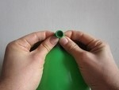
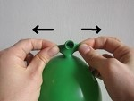

<div class="no_sidecard_main_content">
  <mat-card>
    <h1>Practicum Geluid</h1>
    <section>
      <p>
        Dit practicum kan je thuis doen! Voer de stappen uit en maak het practicum
      </p>
      <p>
        Wat hoor je als je een ballon leeg laat lopen?
      </p>
    </section>

    <section>
      <h3>Benodigdheden</h3>
      <article>
        <ul>
          <li>Ballon</li>
        </ul>
      </article>
    </section>

    <section>
      <h3>Stappen</h3>
      <article>
        <ol>
          <li>Blaas de ballon op</li>
          <li>
            Houd het tuitje met vier vingers vast (zie afbeelding).<br>
            
          </li>
          <li>
            Trek aan het tuitje naar en naar rechts (zie afbeelding).<br>
            
          </li>
          <li>Beschrijf wat er gebeurd.</li>
        </ol>
      </article>
    </section>

    <section>
      <h3>Uitleg</h3>
      <article>
        <p>
          Als de lucht door het tuitje stroomt, drukt de buitenlucht het tuitje dicht.
          Als het tuitje dicht gedrukt wordt, duwt de lucht van binnen het tuitje weer open.
          Doordat het tuitje alsmaar open en dicht gaat krijg je een trilling die je kunt horen als het snerpende geluid.
        </p>
        <p>
          Als je een ballon opblaast, dan staat deze onder druk.
          Dat komt doordat het rubber van de ballon op de lucht in de ballon drukt.
          Houd je de ballon niet goed dicht, dan stroomt de lucht door de hoge luchtdruk in de ballon naar buiten, waar de luchtdruk lager is.
        </p>
      </article>
    </section>
  </mat-card>
</div>
